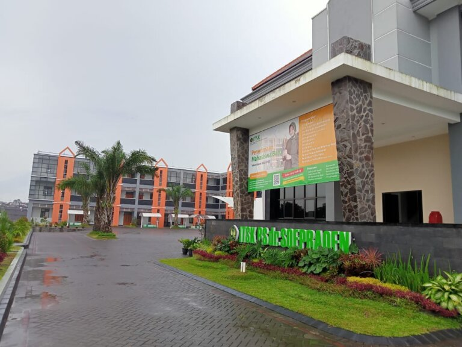

Sejarah
ITSK RS dr. Soepraoen Kesdam V/Brw Malang merupakan institusi pendidikan tinggi tenaga kesehatan yang berada dibawah naungan Yayasan Wahana Bhakti Karya Husada yang berpusat di Jakarta. Yayasan yang didirikan oleh para purnawirawan kesehatan angkatan darat ini bergerak di bidang penidikan dan sosial yang menaungi beberapa institusi pendidikan kesehatan dibeberapa wilayah Indonesia.
ITSK RS dr. Soepraoen Kesdam V/Brw Malang berdiri berdasarkan Keputusan Menteri Pendidikan Nasional RI Nomor: 593 / M / 2020 tanggal 24 Juni 2020 tentang Izin Perubahan Bentuk Politeknik Kesehatan RS dr. Soepraoen Kesdam V/Brawijaya Malang di Kota Malang Menjadi Institut Teknologi, Sains, Dan Kesehatan RS dr. Soepraoe YKesdam V/Brw di Kota Malang Provinsi Jawa Timur Yang Diselenggarakan Oleh Yayasan Wahana Bhakti Karya Husada.
Berdirinya ITSK RS dr. Soepraoen tidak terlepas dari keberadaan Rumkit Tk.II dr.Soepraoen sebagai institusi kesehatan Angkatan Darat yang pernah menyelenggarakan pendidikan tenaga kesehatan untuk memenuhi kebutuhan personil di lingkungan Angkatan Darat dan masyarakat. Dalam perjalanan sejarahnya, Rumkit Tk.II dr.Soepraoen telah menyelenggarakan berbagai jenis pendidikan paramedis dan menghasilkan ribuan lulusan. Beberapa lembaga pendidikan yang pernah dikelola antara lain:
- 1. Sekolah Paramedis Juru Rawat (A.I) sesuai SK Menkes RI nomor:1728/Pend. tanggal 16 April 1952.
- 2. Pendidikan Paramedis Bidan sesuai SK Menkes RI nomor:2256/Pend. tanggal 7 September 1957.
- 3. Pendidikan Paramedis Pengamat Kesehatan sesuai Skep Dirjankesad nomor: Skep/61/7/IX/1957 tanggal 27 September 1957.
- 4. Sekolah Paramedis (Bidan, Pengamat Kesehatan dan Juru Kesehatan) sesuai Skep Dirkesad nomor:Skep/34/6/IV/1960 tanggal 27 Juli 1960.
- 5. Sekolah Paramedis (Sekolah Bidan, Sekolah Perawat, Sekolah Pengamat Kesehatan, dan Sekolah juru Kesehatan) sesuai Skep Kasad nomor:Skep/135/I/1962 tanggal 29 Januari 1962.
- 6. Sekolah Perawat Kesehatan (Konversi) sesuai SK Menkes RI nomor: Skep/74/Kep-Diklat/Kes/1981 tanggal 23 April 1981. Sejak konversi sampai dengan tahun 2001 telah menghasilkan lulusan sebanyak 1.288 orang.
- 7. Program Pendidikan Bidan, selama dibuka telah menghasilkan lulusan sebanyak 108 orang.
- 8. Akademi Keperawatan Rumkit Tk.II dr. Soepraoen (Konversi SPK) sesuai SK Kapusdiknakes Depkes RI nomor: HK.00.06.1.3.2047 tangal 13 Juli 1999. Sejak konversi sampai dengan tahun 2005 telah menghasilkan lulusan sebanyak 179 orang.
- 9. Politeknik Kesehatan RS dr. Soepraoen berdiri berdasarkan Keputusan Menteri Pendidikan Nasional RI Nomor: 198/D/O/2005 tanggal 30 Desember 2005 tentang Pemberian Ijin Penyelenggaraan Prodi Kebidanan (DIII), Penggabungan Prodi Akupunktur (DIII) dari Unmer YPTM dan Akper dr. Soepraoen Menjadi Politeknik Kesehatan RS. dr. Soepraoen Kesdam V/ Brawijaya Malang. Poltekkes RS. dr. Soepraoen Kesdam V/ Brawijaya Malang sudah meluluskan mahasiswa sejumlah 3022 lulusan, yang terbagi: D-III Keperawatan sejumlah7 1613 lulusan, D-III Kebidanan sejumlah 1159 lulusan, dan D-III Akupunktur
sejumlah 250 lulusan.
ITSK RS dr. Soepraoen dipersiapkan untuk menghasilkan lulusan akademik dan vokasi. Dibidang kesehatan. Lulusan akademik menghasilkan lulusan profesional akademik sarjana dan vokasi tenaga kesehatan profesional sarjana pemula dan terapan yang handal dalam rangka memenuhi kebutuhan sumber daya manusia bidang kesehatan baik di masyarakat maupun di lingkungan TNI AD.